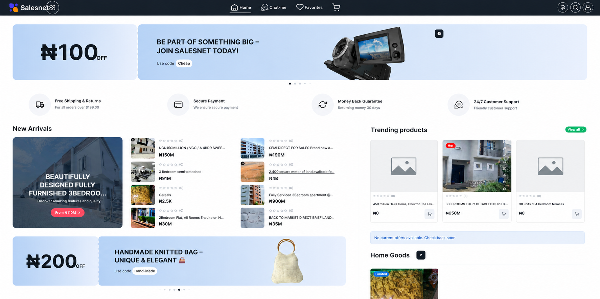
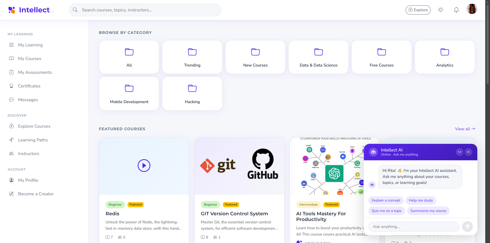
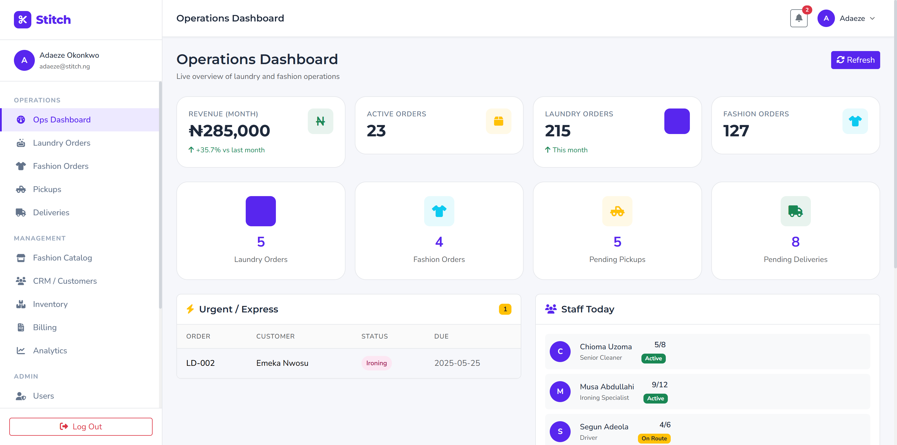
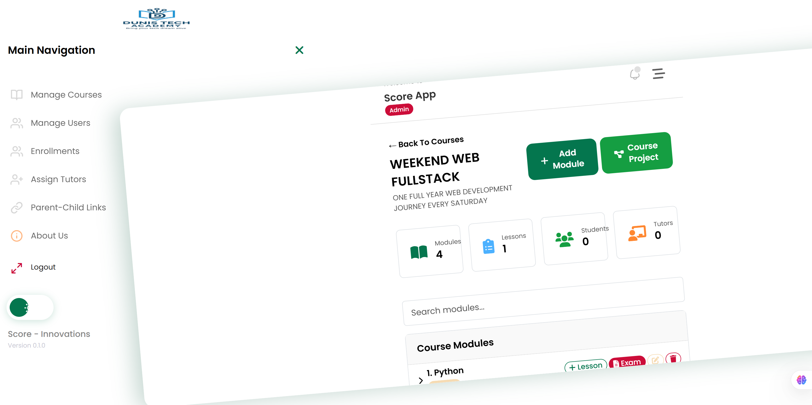
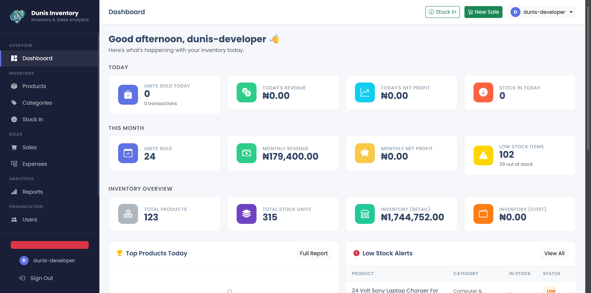
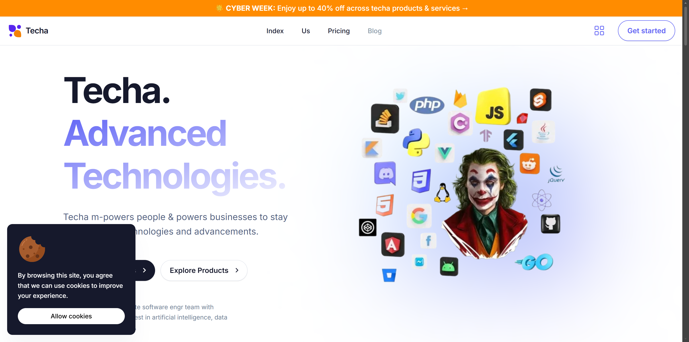

Featured Projects
Production-grade platforms built across e-commerce, ed-tech, fintech, and vertical SaaS.

Salesnet
Founder & Lead EngineerAn AI-powered, Lagos-first marketplace designed to digitize informal commerce. Features include free vendor storefronts, AI-driven local pricing and product tagging, AR try-on for wearables, geo-location-based vendor recommendations, and embedded fintech for seamless payments. Built to serve the unique logistics and trust challenges of the Nigerian market.
Key Features
- AI-powered product categorization and dynamic pricing
- Augmented reality try-on for fashion and accessories
- Geo-location vendor discovery and route optimization
- Embedded payment processing and escrow services
- Vendor analytics dashboard with real-time sales insights

Intellect
Founder & Lead EngineerA digital learning companion built to democratize education access. Supports video, PDF, PPT, audio, and interactive lesson formats. Integrates an AI Learning Assistant for personalized tutoring, auto-generates completion certificates, hosts live sessions, and provides a Creator Studio for educators to monetize content. Includes B2B partnership tools for institutions and corporate training programs.
Key Features
- Multi-format content delivery (video, audio, documents, interactive)
- AI-powered learning assistant with contextual Q&A
- Auto-certificate generation upon course completion
- Live streaming and real-time collaboration tools
- Creator Studio with monetization and analytics

Stitch
Lead EngineerA vertical SaaS platform transforming Nigeria's laundry and fashion economy. Converts informal SMEs from notebook-based operations to predictable digital revenue through inventory tracking, order management, customer relationship management, and embedded payment processing. Designed specifically for the operational realities of small-scale service businesses in Lagos.
Key Features
- Inventory tracking with low-stock alerts and demand forecasting
- End-to-end order lifecycle management
- Customer CRM with SMS notification integration
- Financial reporting and profit analytics
- Mobile-first design for on-the-go business owners

Score App
Lead EngineerAn innovative scoring and academic management system built for Dunistech Academy and partner institutions. Tracks student attendance, records and manages scores across subjects, keeps parents informed via automated SMS and email updates, and auto-generates performance analysis reports with visual grade distribution charts and trend identification.
Key Features
- Automated attendance tracking with biometric integration
- Comprehensive score management and grade computation
- Parent notification system via SMS and email
- Auto-generated performance analysis and trend reports
- Role-based access control for teachers, admins, and parents

Inventory Management System
Lead EngineerA precision inventory and profit analytics platform designed for SMEs. Features real-time stock tracking, automated sales reporting, demand forecasting using historical data, and deep financial insights. Helps business owners move from gut-feeling restocking to data-driven inventory decisions.
Key Features
- Real-time stock tracking with barcode scanning
- Sales reporting with profit margin analysis
- Demand forecasting based on historical trends
- Financial insights and cash flow projections
- Multi-location inventory support

Techa
Founder & Lead EngineerMy personal engineering portfolio and SaaS launchpad. Serves as a central hub for product demos, technical writing, client project showcases, and experimental prototypes. Designed with a dark, minimalist aesthetic that emphasizes code quality and system architecture over visual noise.
Key Features
- Centralized product demo showcase
- Technical blog and case study publication
- Client project portfolio with live previews
- SaaS launchpad for rapid MVP deployment
- Dark-mode optimized, performance-first design